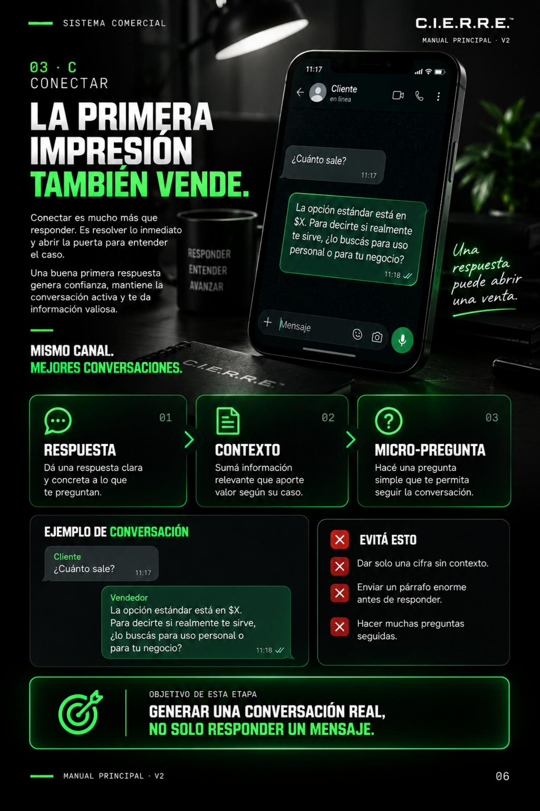
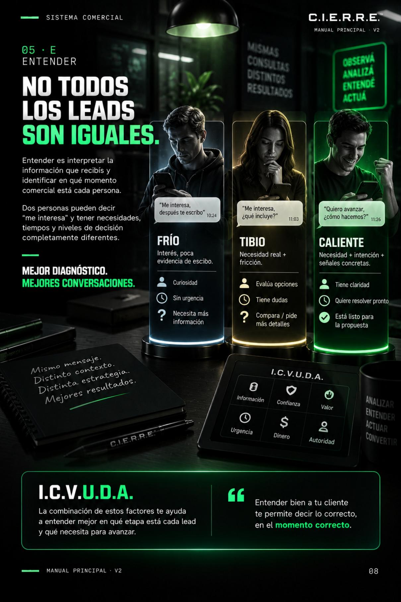
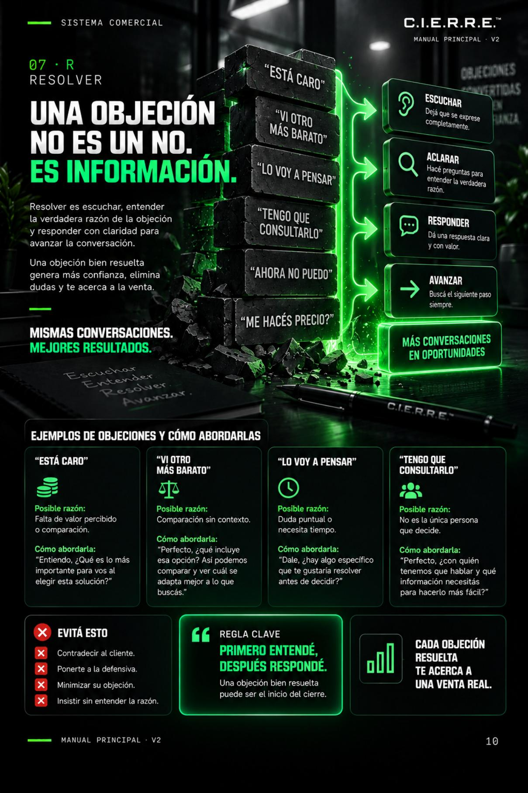

Consultas olvidadas
Mensajes que quedan enterrados y nunca vuelven a activarse.
Aplicá C.I.E.R.R.E.™ para calificar oportunidades, conducir conversaciones, resolver objeciones y hacer seguimiento sin depender de la improvisación.
✓ Pago único · Acceso inmediato

EL COSTO DE IMPROVISAR
Cuando cada conversación se responde de una forma distinta, las oportunidades dependen de la memoria, el tiempo y la intuición.
Mensajes que quedan enterrados y nunca vuelven a activarse.
Conversaciones largas sin saber si existe intención real.
El interés se enfría porque no existe un próximo paso definido.
Se recomienda antes de comprender qué necesita el cliente.
El sistema no busca que respondas más. Busca que cada respuesta tenga una función.
Conocer el método →ESTO ES PARA VOS SI...
No importa si ofrecés un producto, un servicio o gestionás un equipo: el sistema empieza donde empieza la mayoría de tus ventas, en una conversación.
No es una colección de mensajes mágicos. Es para quien está dispuesto a aplicar un proceso, revisar conversaciones y mejorar decisiones.
UN MÉTODO. UN PROCESO. MEJORES DECISIONES.
Abrí conversaciones reales con contexto y una micro-pregunta que invite a responder.
Detectá situación, necesidad y resultado esperado antes de ofrecer.
Identificá intención, capacidad, valor, urgencia, decisión y alineación.
Presentá una solución que encaje con lo que la persona realmente necesita.
Convertí dudas en información útil sin presionar ni discutir.
Sostené el interés con presencia y un próximo paso claro.
Conversión, calificación, respuestas y seguimiento dejan de ser intuición.
Prepará respuestas y análisis sin perder humanidad ni criterio comercial.
MIRÁ LO QUE VAS A IMPLEMENTAR
Una selección del interior del manual para que veas la profundidad, la estructura y el nivel visual del sistema.

Cómo iniciar una conversación real sin sonar como un mensaje automático.

El filtro I.C.V.U.D.A. para reconocer qué necesita cada lead.

Una estructura para abordar objeciones sin improvisar.
DE LA TEORÍA A LA ACCIÓN
Seleccioná cada día para ver el foco de implementación.
Detectá dónde se pierden hoy tus oportunidades.
QUÉ CAMBIA DESPUÉS DE APLICARLO
ELEGÍ TU NIVEL DE IMPLEMENTACIÓN
El sistema práctico para ordenar cómo vendés por WhatsApp.
Pago único · Sin suscripciones
Reemplazá este enlace por tu checkout de Hotmart.
La evolución del sistema: asistencia comercial con IA para analizar conversaciones y recomendar próximos pasos.
No disponible para compra todavía.
UNA PROPUESTA TRANSPARENTE
Esta versión de lanzamiento no se apoya en testimonios inventados. Se apoya en un método claro, ejemplos aplicables y herramientas concretas para ordenar cómo vendés por WhatsApp.
PREGUNTAS FRECUENTES
No. El sistema organiza tus conversaciones desde cero y te entrega un proceso aplicable desde el primer día.
Sí. Se adapta a negocios, profesionales, emprendedores y equipos que reciben consultas por WhatsApp.
No. Funciona como copiloto para preparar, mejorar y acelerar respuestas sin perder tu criterio comercial.
El roadmap propone siete días de implementación progresiva. Podés avanzar a tu ritmo.
Después de la compra recibís acceso digital al manual, los bonus y el tracker incluidos.